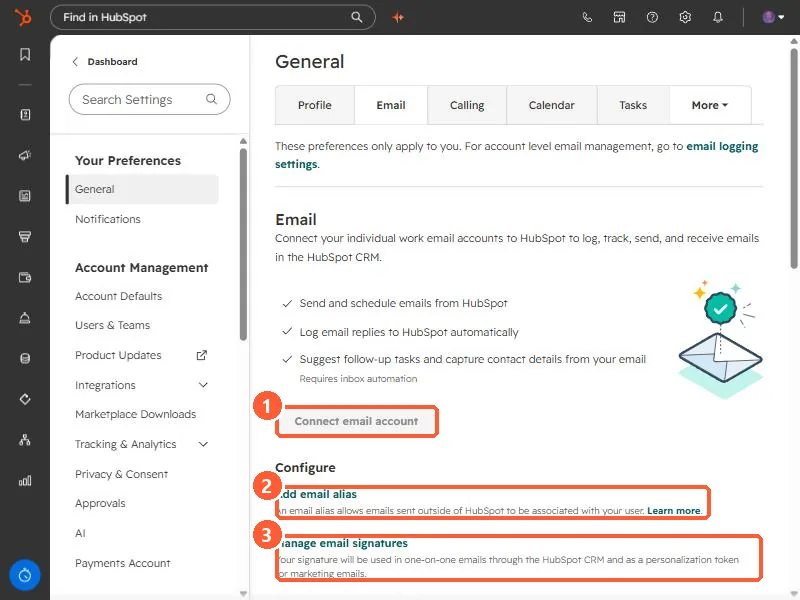
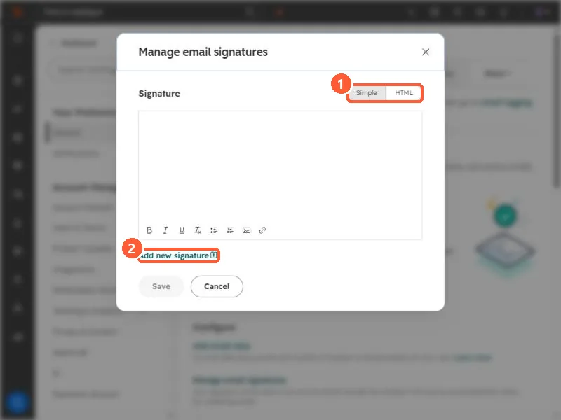

Short answer
In Settings, General, Email, these preferences apply only to you. Connect email account links your work inbox so you can send, schedule, and log emails from HubSpot. Add email alias associates other addresses you send from with your user. Manage email signatures sets the signature used in one-to-one emails, which is also available as a personalization token in marketing emails. Alias support depends on your provider.
1. The Email tab
Open your email preferences. The tab says these preferences only apply to you, and links to account-level email logging settings for admins.


- Connect email account. Lets you send and schedule email from HubSpot and log replies automatically. Inbox automation adds follow-up task suggestions.
- Add email alias. The page says an alias lets emails sent outside of HubSpot be associated with your user.
2. Aliases depend on your provider
- Gmail: aliases configured in Gmail can be used.
- Microsoft Exchange or IMAP: HubSpot says you cannot send from an alias inside the HubSpot CRM, but you can log alias emails with the BCC address or the Sales add-in.
- Microsoft Outlook: sending from Outlook aliases is a beta that needs you to disconnect and reconnect your inbox.
- An alias cannot be used to send from a team address connected to the conversations inbox.
3. Signatures
Click Manage email signatures.


- Write it in the Simple editor or paste HTML.
- The settings page says your signature is used in one-to-one emails through the CRM and as a personalization token for marketing emails, so a marketing email can be signed by the contact owner.
- Add new signature shows a lock icon in my demo, so check your own account before you plan on several signatures.